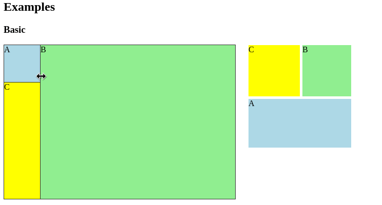
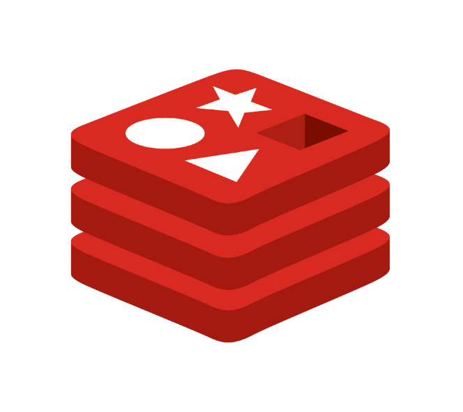

| LIBRARIES
lapse
Returns a string that says how long ago the inputted date was.
e.g. "Less than a minute ago" or
"4 days ago"
e.g. "Less than a minute ago" or
"4 days ago"
lazy-loadable

A React lazy-loadable HOC.
Asynchronously load your components. Wrapper for react-imported-component.
Asynchronously load your components. Wrapper for react-imported-component.
resizable-panes

A React resizable-panes control.
Pass your components as props to place them in a 2 or 3-pane configuration and make them resizable
Pass your components as props to place them in a 2 or 3-pane configuration and make them resizable
| ANSIBLE
ansible-configure-terminal
Configures the terminal in the server to have the same time-saving shortcuts one uses in the local host
ansible-create-database-and-users
Creates OS users and their corresponding PostgreSQL roles
ansible-install-golang-migrate
Makes sure golang-migrate is present in the system

{kind=link}
{kind=link}
{kind=link}
{kind=link}
{kind=link}
{kind=link}
{kind=link}
{kind=link}
{kind=link}
ansible-golang-migrate
A role to control golang-migrate with command line variables
ansible-install-postgresql
Makes sure postgresql is present in the system
ansible-install-redis

Makes sure redis is present in the system
ansible-remount-shared-folder
Remounts shared folder with the specified user permissions
ansible-systemd-pm2-service
Sets up a pm2 systemd service to handle a NodeJS app
ansible-update-upgrade
A role to apt-get update && apt-get upgrade
| FILEOPS
Fileops is a 3-pane file manager, and you can arrange these panes however you want.
{kind=link}
{kind=link}
Toggle between button navigation and text navigation
Comes with support for english and spanish out of the box. Easily change between the two.
{kind=link}
{kind=link}
Comes with theme support
Filter folders in the tree
{kind=link}
{kind=link}
Show a file's properties
Drag and shift select multiple files
{kind=link}